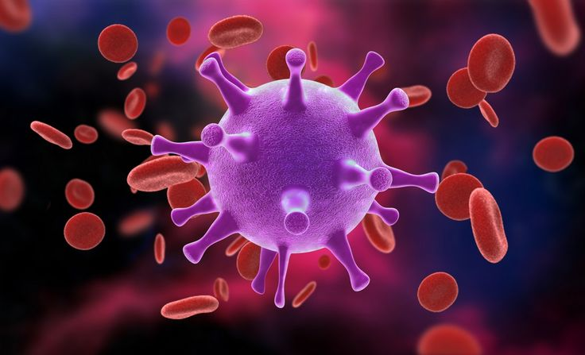
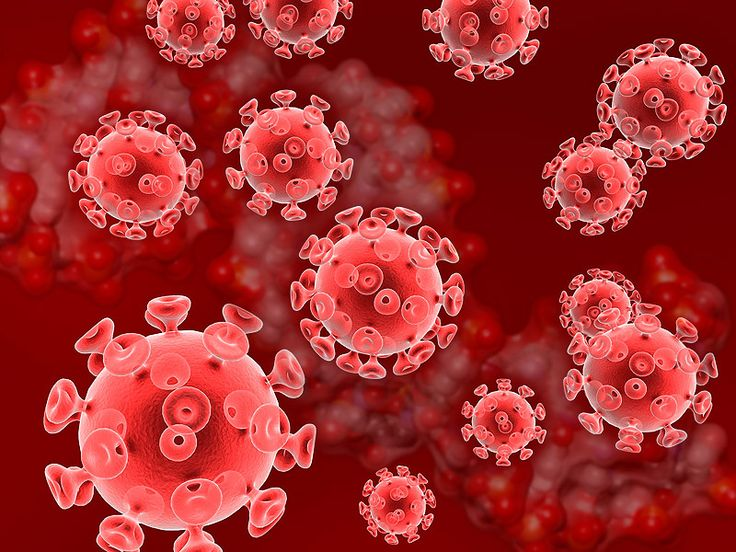

Conoce qué es el SIDA, cómo afecta al cuerpo humano y por qué es vital la prevención.

¿Qué es el SIDA?
El SIDA (Síndrome de Inmunodeficiencia Adquirida) es la fase avanzada de la infección causada por el virus VIH, que debilita el sistema inmunológico y deja al cuerpo vulnerable a enfermedades.

Transmitido por relaciones sexuales sin protección
También por sangre infectada o de madre a hijo
No tiene cura, pero sí tratamiento
Estadísticas recientes (2024)
Según ONUSIDA, en 2024 se registraron:
1.3 millones de nuevos casos de VIH
39 millones de personas viven con VIH
54% de los nuevos casos ocurrieron en jóvenes de 15 a 24 años
África subsahariana concentra el 65% de los contagios
Video educativo: ¿Qué es el VIH/SIDA?
Gracias por tu atención
Infórmate, cuídate y comparte esta información. Más detalles en:
ONUSIDA